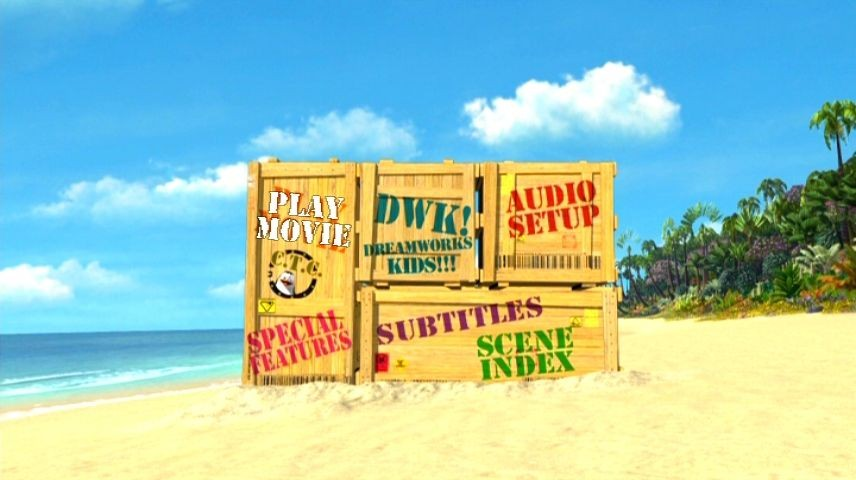
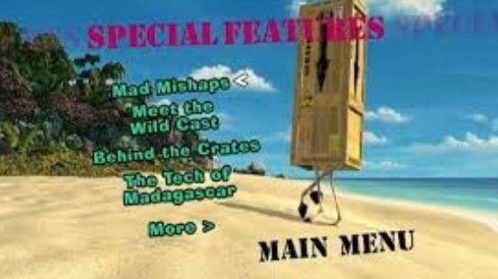
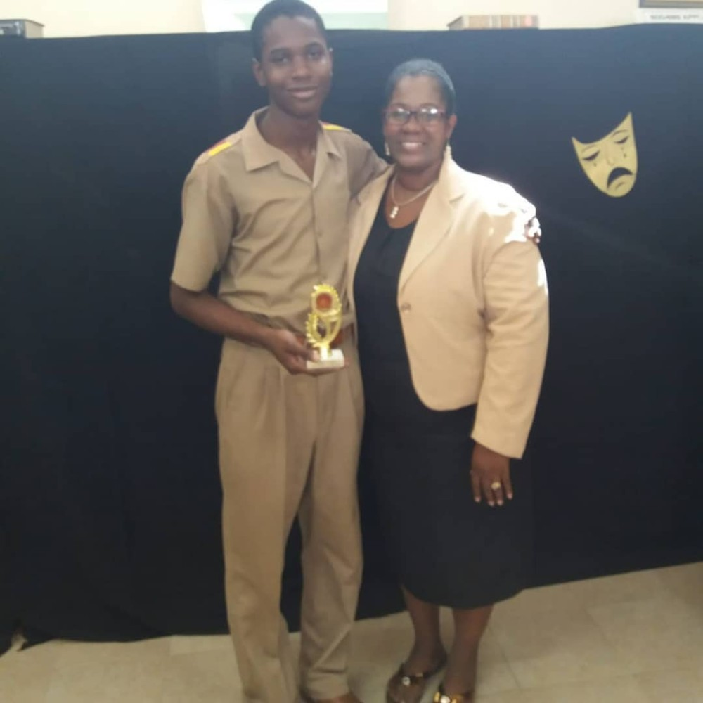

I’ve always been fascinated by communication.
Not just the ability to speak — but to really convey something that connects. That lights something up in someone else. That lingers.
As a child, I looked up to those I saw as master communicators—teachers, speakers, writers—people who could take abstract thoughts and shape them into phrases that stuck. They had a way of translating what lived in their minds into something clear, almost effortless, and deeply felt.
I didn’t yet have the tools to emulate them, but I wanted to. So I did what made sense to my curious little brain: I happily read dictionaries and thesauruses (if that doesn’t scream logophile, I don’t know what does). I just knew, instinctively, that if I wanted to express myself more freely, I’d need a broader pool of words to pull from.
And hey—if you paused to look up logophile, you may have just taken your first step toward becoming one. Hah!
I devoured documentaries, magazines, and my sister’s high school literature books. Once the internet became accessible, I’d spend hours on the family computer, ravenously exploring article after article across every topic imaginable.
If I came across a word, phrase, or concept I didn’t understand, I wouldn’t stop until I could use it myself—especially in conversation with a grown-up. I had a need to understand, and just as deeply, a need to be understood.
The DVD That Changed Everything
One day, my parents bought my sister and me a copy of Madagascar (2005)— the DreamWorks animated film. It came with trivia games, secret codes, mini-activities… We were obsessed.

But the part that really caught me — the part I remember most vividly — was buried in the Special Features section of the DVD: a behind-the-scenes look into how the movie was made.

Suddenly, this wild, vibrant, hilarious world we had watched unfold wasn’t just “TV land.” It was made. Every frame, every sound, every moment was crafted — not by "magic", but by people.
That changed everything for me.
From then on, I didn’t just want to watch stories. I wanted to make them. My sights were set on my first dream job: Animator.
ENTER STICKMEN (but cool)
In preparatory school, a new trend took hold fueled by the rise of Adobe Flash animations on platforms like YouTube and aptly named StickPage. Suddenly, stick figure animations weren’t just YouTube clips — they were art. Entire fandoms sprouted up around this dynamic, kinetic form of storytelling.
Soon, my classmates started drawing stick figure comics in their notebooks. And of course, I dove in headfirst.
Armed with the back pages of my school notebooks and a handful of ballpoint pens—the only workaround I had for my perfectionism-fueled urge to erase—I started cranking out comic after comic.
At first, they were just silly gags. Then came full arcs. Then whole worlds. The stories grew longer. The characters, deeper. Friends began borrowing my books just to see what happened next.
It was electric.
I even dabbled with tools like Pivot Animator — a simple stick figure animation program — but I never made it too far there. The software didn’t stick (hehe). But the storytelling? That did.
What I didn’t realise at the time was this: People weren’t drawn to my comics because the art was phenomenal (trust me, it wasn’t). They were drawn to the narrative, the story.
Might Be Onto Something Here
When the gap between my ambition and artistic ability became hard to ignore — especially surrounded by peers with genuinely awe-inspiring art skills — I began stepping back from comics.
But I didn’t stop creating. I just found a new medium: writing.
It had always been there — buried in the margins of everything I did. And now, it came roaring forward.
I started entering my school’s poetry competitions—at first under a pen name, convinced I wouldn’t place. I won (2017). Then I won again (2018). Eventually, I entered a short story competition—hesitant at first, but bolstered by praise from an after-school programme. I won that, too (2019).

And somewhere in the midst of all that, I even tied for fourth in the Wolmer's Boys' School Monica Sterling Essay Competition (2019)—as the only bulla shirt (our nickname for the full khaki worn by students not yet in sixth form) to walk up for an award… though that meant I just missed the cash prize. Tragic, I know.
Suddenly, for the first time in my life, I wasn’t trying to somehow draw better to tell a better story. I was telling the story in the way that came most intuitively for me. With words.
But just as I was starting to think “Writer” might be the final form, something else quietly snuck in.
Marketing Has Entered the Chat
Even before I knew the word “marketing,” I had a feel for it.
Back when my mom worked at Mother's Food Group, she once brought home a leopard-print gift bag full of fragrances. To most people? Just packaging. But immediately, the patty bag-like shape got my gears turning.
I was still in prep school at the time, but I remember confidently pitching her this “Go Wild” idea — Jungle-themed healthy meals and fruit juices with big-cat-printed patty bags and cups.
In short, nothing came of it (bummer). However, she smiled, acknowledged my effort and said it was a clever idea. And for the first time I heard, from her, the word marketing. It kind of had a nice ring to it.
Years later, I saw the Bachelor of Science in Marketing programme on a brochure at a booth by University of the Commonwealth Caribbean (UCC) during a career day fair in high school.
Something clicked.
I went down a research rabbit hole and this was it! The new calling.
Because what is marketing, if not strategic storytelling?
Fast-forward to Now
Today, I’m a digital content creator, with a focus on content marketing initiatives across various platforms. I have a particular passion for crafting stories through videos, voiceover work and, of course, the good ol' written word.
And while I’m still building my way forward, I’ve learned something valuable:
In today’s noisy, digital-driven landscape, new approaches are needed to maximise success.
That’s what this newsletter is about.
Welcome to Creator’s Current
This newsletter isn’t some expert playbook or crash course in viral growth (if I do find that secret formula though, you'll be the first to know). It’s little finds, honest insights, and lessons learned in motion.
It’s for fellow creators and small brands navigating ever-changing tools, unpredictable algorithms, and platforms that switch things up on a whim.
Here’s what you’ll find here:
- Behind-the-scenes insights from my messy, growing creative life
- Storytelling tips (visual and otherwise) that actually work—for real people, not just brands with ten-person teams and infinite budgets
- Heartfelt stories about the creative life when you’re still figuring it all out
- The occasional deep dive into why certain content just hits (and why some flop)
I’m not necessarily writing from a mountaintop of enlightenment. I’m right here with you—making it up as I go and sharing what I pick up along the way. Think Let’s Play, not Walkthrough. (And yeah, streamers and TikTok clips kind of hijacked those, didn’t they? Oh, how times change.)
My goal isn’t to hand you all the answers, because even if I let you copy my homework exactly, you still won’t get full marks... trust me.
That said, some issues of this newsletter (like uh, the next one) will take a more zoomed-out view. Diving into research, frameworks, and what the data actually says about how content connects. Not because I’ve mastered it all, but because I’m genuinely fascinated by it. Also, I figure if it helps me think clearer, it might help you too.
So whether you’re here for the messy behind-the-scenes, the nerdy deep-dives, or just the occasional creative nudge—welcome. You’re in the right place.
👉 Hit Subscribe to join the current. Who knows? You might just find something worthwhile.
Until next time,
Velton
Want more essays like this?
Creator's Current is published on LinkedIn. Subscribe to get new issues in your feed.
This piece is part of Creator's Current, Velton Gooden Jr.'s ongoing series on creativity, digital presence, storytelling, and practical systems. Originally published on LinkedIn: View on LinkedIn